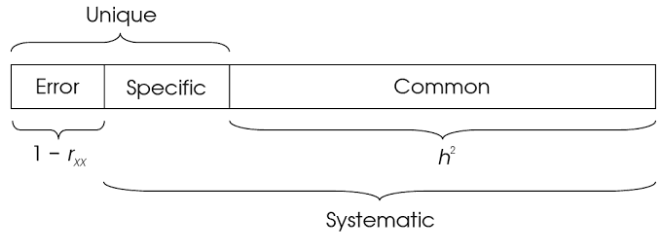
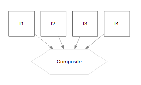

Latent Variables
Not everything we want to measure comes with an obvious yardstick. If one wants to measure something like a person’s happiness, what would they have at their disposal?
- Are they smiling?
- Did they just get a pay raise?
- Are they interacting well with others?
- Are they relatively healthy?
Any of these might be useful as an indicator of their current state of happiness, but of course none of them would tell us whether they truly are happy or not. At best, they can be considered imperfect measures. If we consider those and other indicators collectively, perhaps we can get an underlying measure of something we might call happiness, contentment, or some other arbitrary but descriptive name.
Despite the above depiction of a latent variable, which is consistent with how they are typically used within psychology, education and related fields, the use of latent variable models is actually seen all over, and in ways that may have little to do with what we will be mostly focusing on here24. Broadly speaking, factor analysis can be seen as a dimension reduction technique, or as an approach to modeling measurement error and understanding underlying constructs. We will give some description of the former while focusing on the latter.
Dimension Reduction/Compression
Before getting into what we’ll call measurement models in the SEM context, we can first take a look at things from a more general perspective, especially in terms of dimension reduction. Many times we simply have the goal of taking a whole lot of variables, reducing them to much fewer, but while retaining as much information about the originals as possible. For example, this is an extremely common goal in areas of image and audio compression. Statistical techniques amenable to these approaches are commonly referred to as matrix factorization.
Principal Components Analysis
Probably the most commonly used factor-analytic technique is principal components analysis (PCA). It seeks to extract components from a set of variables, with each component containing as much of the original variance as possible. Equivalently, it can be seen as producing projections on a lower dimensional subspace that have a minimum distance from the original data. Components are linear combination of the original variables.
PCA works on a covariance/correlation matrix, and it will return as many components as there are variables that go into the analysis. Each subsequent component accounts for less variance than the previous component, and summing all components results in 100% of the total variance in the original data accounted for. With appropriate steps, the components can completely reproduce the original data/correlation matrix. However, as the goal is dimension reduction, we only want to retain some of these components, and so the reproduced matrix will not be exact. This however gives us some sense of a goal to shoot for, and the same idea is also employed in factor analysis/SEM, where we also work with the covariance matrix and prefer models that can closely reproduce the original correlations seen with the observed data.
Visually, we can display PCA as a graphical model. Here is one with four components/variables. The size of the components represents the amount of variance each accounts for.
Let’s see an example. The following regards a very small data set25 5 socioeconomic indicators for 12 census tracts in Los Angeles (a classic example from Harman, 1967). We’ll use the psych package, and the principal function within it. To use the function we provide the data (available via the package), specify the number of components/factors we want to retain, and other options (in this case, a rotated solution might be a little more interpretable26, but is typically not employed in PCA, so we specify ‘none’). The psych package gives us more options and a little more output than standard PCA packages and functions, and one that is more consistent with the factor analysis technique we’ll spend time with later. While we will also use lavaan for factor analysis to be consistent with the SEM approach, the psych package is a great tool for standard factor analysis, assessing scale reliability, and other fun stuff.
For the PCA, we’ll retain three components and use no rotation, and we’ll also focus on a standardized solution. Not doing so would result in components favoring variables with more variance relative to others. As such standardization is almost always conducted as a pre-processing step for PCA, though here it is an option to specify as part of the function (covar=F).
library(psych)
pc = principal(Harman.5, nfactors=3, rotate='none', covar = F)
pcPrincipal Components Analysis
Call: principal(r = Harman.5, nfactors = 3, rotate = "none", covar = F)
Standardized loadings (pattern matrix) based upon correlation matrix
PC1 PC2 PC3 h2 u2 com
population 0.58 0.81 0.03 0.99 0.0114 1.8
schooling 0.77 -0.54 0.32 0.99 0.0130 2.2
employment 0.67 0.73 0.11 0.99 0.0075 2.0
professional 0.93 -0.10 -0.31 0.97 0.0250 1.2
housevalue 0.79 -0.56 -0.06 0.94 0.0583 1.8
PC1 PC2 PC3
SS loadings 2.87 1.80 0.21
Proportion Var 0.57 0.36 0.04
Cumulative Var 0.57 0.93 0.98
Proportion Explained 0.59 0.37 0.04
Cumulative Proportion 0.59 0.96 1.00
Mean item complexity = 1.8
Test of the hypothesis that 3 components are sufficient.
The root mean square of the residuals (RMSR) is 0.02
with the empirical chi square 0.07 with prob < NA
Fit based upon off diagonal values = 1First focus on the portion of the output where it says SS loadings . The first line is the sum of the squared loadings27 for each component (in this case where we are using a correlation matrix, summing across all 5 possible components would equal the value of 5). The Proportion Var tells us how much of the overall variance the component accounts for out of all the variables (e.g. 2.87 / 5 = 0.57). The Cumulative Var tells us that all 3 components make up over 98% the variance. The others are the same thing just based on the 3 retained components rather than all 5 variables. We can see that each component accounts for a decreasing amount of variance.
Loadings, also referred to as the pattern matrix, in this scenario represent the estimated correlation of an item with its component, and provide the key way in which we interpret the factors. As an example, we can reproduce the loadings by correlating the observed variables with the estimated component scores, something we’ll talk more about later.
cor(Harman.5, pc$scores) %>% round(2) PC1 PC2 PC3
population 0.58 0.81 0.03
schooling 0.77 -0.54 0.32
employment 0.67 0.73 0.11
professional 0.93 -0.10 -0.31
housevalue 0.79 -0.56 -0.06It can be difficult to sort it out just by looking at the values, so we’ll look at it visually. In the following plot, stronger loadings are indicated by blue, and we can see the different variables associated with different components.
Interpretation is the fun but commonly difficult part. As an example, PC1 looks to be mostly our socioeconomic status of the tract. Any tract with a high score on that component will have high values on all variables. It’s worth mentioning the naming fallacy at this point. Just because we associate a factor with some concept, doesn’t make it so. The underlying cause of the result could for example merely be due to population itself.
Some explanation of the other parts of the output:
h2: the amount of variance in the item/variable explained by the (retained) components. It is the sum of the squared loadings, a.k.a. communality. For example, population is almost completely explained by the three componentsu2: 1 - h2com: A measure of complexity. A value of 1 might be seen for something that loaded on only one component, and zero otherwise (a.k.a. perfect simple structure).
We can get a quick graphical model displayed as follows28:
PCA may not be the best choice in this scenario, nor likely is this the most interpretable solution. One issue with PCA is that this graphical model assumes the observed variables are measured without error. In addition, the principal components do not correlate with one another by default, but it seems likely that we would want to allow the latent variables to do so in many situations, perhaps including this one (a different rotation would allow this). However, if our goal is merely to reduce the 24 items to a few that account for the most variance, this would be a standard technique.
Factor Analysis
Now let’s examine what is sometimes called common factor analysis, and also sometimes exploratory factor analysis in the social sciences, and even ‘classical’ or ‘traditional’, but typically just factor analysis (FA) everywhere else. While we can use both PCA and FA for similar reasons (dimension reduction) and even have similar interpretations (in terms of loadings), there are some underlying subtleties between the two that provide unique distinctions29. Noting these distinctions with some detail will require some matrix notation, but for readers not so keen on such presentation they may note the images and concluding points.
First let’s revisit PCA, where we can depict it conceptually as an approach where we attempt to approximate the correlation matrix in terms of the product of components, represented by our loading matrix \(L\)30.
\[R \approx LL'\] and
\[C = XW\] In other words, each component score \(C\), i.e. the score for a particular observation with regard to the component, is a weighted combination of the \(p\) observed variables \(X\), the weights (with weight/loading matrix \(W\)) of which are determined by the loadings, but yet do not say anything about the correlations between the variables. We can use those component loadings to approximate the correlation matrix, or reproduce it exactly if we retain all the components possible. The following demonstrates this.
pc_all = principal(Harman.5, nfactors=5, rotate='none', covar = F)
all.equal(tcrossprod(loadings(pc_all)), cor(Harman.5))[1] TRUEIf we return to our causal thinking from before, the causal flow originates with the observed variables to the components. Perhaps now it is clearer as to the interpretation of the loadings we had before, as correlations with components. In fact, we see now that the loadings are used to create the estimated component scores in the first place.
Things are different with factor analysis. Now the causal flow is in the other direction, originating with the latent variables.
\[X \approx FW\]
Each observed variable \(x\) is a function of the latent variables that it is associated with. In addition, we also take into account the uniquenesses \(\Psi\), or that part which the factors do not explain.
And to reproduce the correlation matrix:
\[R \approx LL' + \Psi\] So if we just use the loadings from the FA, we cannot reproduce the correlation matrix exactly, we need to add the uniquenesses as well. If you look at the pc_all results, you’ll note that the uniquenesses are all zero, but this is not the case with factor analysis.
fa_all = fa(Harman.5, nfactors=5, rotate='none', covar = F)
all.equal(tcrossprod(loadings(fa_all)), cor(Harman.5)) # doesn't reproduce cormat[1] "Mean relative difference: 0.02125258"# add uniquenesses
all.equal(tcrossprod(loadings(fa_all)) + diag(fa_all$uniquenesses), cor(Harman.5)) [1] TRUEWhat this amounts to conceptually are a few key ideas:
- Factor analysis focuses on covariance. PCA focuses on variance.
- Factors are the cause of the observed variables, variables are the cause of components.
- Factor analysis does not assume perfect measurement of observed variables.
Let’s now do the factor analysis for the same Harman 5 data.
fac = fa(Harman.5, nfactors=3, rotate='none')
facFactor Analysis using method = minres
Call: fa(r = Harman.5, nfactors = 3, rotate = "none")
Standardized loadings (pattern matrix) based upon correlation matrix
MR2 MR1 MR3 h2 u2 com
population -0.12 0.98 -0.11 0.98 0.0165 1.1
schooling 0.89 0.15 0.29 0.90 0.0967 1.3
employment 0.00 1.00 0.04 0.99 0.0053 1.0
professional 0.72 0.52 -0.10 0.80 0.1969 1.9
housevalue 0.97 0.13 -0.09 0.97 0.0289 1.1
MR2 MR1 MR3
SS loadings 2.28 2.26 0.11
Proportion Var 0.46 0.45 0.02
Cumulative Var 0.46 0.91 0.93
Proportion Explained 0.49 0.49 0.02
Cumulative Proportion 0.49 0.98 1.00
Mean item complexity = 1.2
Test of the hypothesis that 3 factors are sufficient.
The degrees of freedom for the null model are 10 and the objective function was 6.38 with Chi Square of 54.25
The degrees of freedom for the model are -2 and the objective function was 0
The root mean square of the residuals (RMSR) is 0
The df corrected root mean square of the residuals is NA
The harmonic number of observations is 12 with the empirical chi square 0 with prob < NA
The total number of observations was 12 with Likelihood Chi Square = 0 with prob < NA
Tucker Lewis Index of factoring reliability = 1.318
Fit based upon off diagonal values = 1
Measures of factor score adequacy
MR2 MR1 MR3
Correlation of scores with factors 0.99 1.00 0.82
Multiple R square of scores with factors 0.98 1.00 0.68
Minimum correlation of possible factor scores 0.96 0.99 0.36Once again, we’ll depict the loadings visually.
We have a notably different interpretation with this approach. To begin, our first two factors account for roughly the same amount of variance. Secondly, none reflect all the variables simultaneously. For example, the first might reflect the wealth of census tracts, while the second size. The third latent variable has a murky interpretation at best, but is mostly reflective of education. However, for identifiability reasons, a topic we will address more later, technically 3 factors is too many for five variables without imposing constraints on some of the parameters.
The number of factors
A key question, even in the context of SEM, is the number of latent variables to posit for a particular set of variables. In SEM this is usually guided by theory, but in common factor analysis, all items load on whatever number of factors we choose. In both cases some solutions will work better than others for the data at hand, and different models should be compared. The same techniques used in other modeling situations, e.g. comparing AIC, are often available. Furthermore, one should inspect the residuals of the the observed vs. reproduced correlation matrix to further understand where a particular model fails, even if it seems to be a decent fit otherwise.
As an example, comparing the BIC of a two factor model vs. a one factor model would show that the two factor model is preferable (lower BIC), and aside from a couple of the variances, the residuals are quite low.
fac1 = fa(Harman.5, nfactors=1, rotate='none', fm='ml')
fac2 = fa(Harman.5, nfactors=2, rotate='none', fm='ml')
fac1$BIC[1] 12.13712fac2$BIC[1] -0.2618109The main thing you need to know is that every time you use a scree plot to determine the number of factors to retain, both a kitten and a puppy will die in some gruesome fashion.
Estimation in Factor Analysis
There are several methods available to estimate a factor analysis.
- Principal Axis: essentially PCA with communalities on the diagonal of the correlation matrix.
- Minimum residuals: attempts to minimize the residuals of the off-diagonal elements of the correlation matrix, i.e. minimized the difference in the observed versus model implied correlation matrix. This is the default in the psych package.
- Maximum likelihood: the most widely used approach, assumes a normal distribution for the data generating process, but can be extended to others. Click here for some by-hand R code with comparison to lavaan output.
- Bayesian: the basic method extends the maximum likelihood approach as with other analyses by adding priors to the estimation process, i.e. posterior \(\propto\) likelihood + prior. A different tact would estimate the factor scores as additional parameters (along with the loadings) etc.
Nonparametric Factor Analysis
As noted previously, one of the hard problems in factor analysis is determining the number of factors to retain, a similar issue seen in cluster analysis. Although relatively rarely used, if even heard of, among many practitioners of factor analysis, Bayesian nonparametric approaches get around this by letting the number of clusters/factors grow with the data. Sticking with factor analysis, an underlying Dirichlet or other process is assumed, and depending on the prior, new factors will be added with more or less ease. Such approaches would also be applicable to a streaming data context.
Other Techniques
Before leaving PCA and common factor analysis for factor analysis of the sort we’ll mostly be concerned with in SEM, I’ll mention other matrix factorization techniques that might be of use depending on your data situation, or merely of interest otherwise. In general, the use of latent variables is wide, and a number of techniques may be more suitable for certain data situations or modeling goals. Just having PCA and Factor Analysis at your disposal may be too limiting. However, many of the techniques are similar to others. For example, many have ties to PCA in various ways, as noted below.
- SVD: singular value decomposition. Works on a raw data matrix rather than covariance matrix, and is still a very viable technique that may perform better in a lot of situations relative to fancier latent variable models, and other more recently developed techniques. Variations on SVD are/were behind some recommender systems of the sort you come across at Amazon, Netflix etc. There is a notable tie between SVD and PCA such that SVD is actually used for PCA for computational reasons in many scenarios.
- ICA: Independent components analysis. Extracts non-normal, independent components. The primary goal is to create independent latent variables.
- Generalized PCA: PCA techniques for different types of data, e.g. binary data situations.
- PC Regression: combining PCA with regression in one model.
- NMF: non-negative matrix factorization. Applied to positive valued matrices, produces positive valued factors. Useful, for example, when dealing with counts.
- LSI: Latent Semantic Indexing, an early form of topic modeling. It has an equivalence to NMF.
- LDA: Latent Dirichlet Allocation, the typical approach for topic modeling, generalizes LSI/NMF. Essentially can be seen as discrete PCA, i.e. a special case of exponential/generalized PCA.
- Canonical correlation: an early approach to correlating two sets of variables by constructing composite variables of the corresponding sets. Standard regression, MANOVA/discriminant function analysis, and the simple Pearson correlation are all special cases. Superseded by SEM.
- Many others. Check the ‘other uses’ section.
Summary
So to summarize, we have two techniques, very similar on the surface, but with key differences between them. Both allow us to reduce the data to fewer dimensions than we start with. However, both do so in different ways and with different goals in mind. Depending on the specifics of your situation you might prefer either for dimension reduction or construct exploration.
Constructs and Measurement Models
As we have seen, factor analysis is a general technique for uncovering latent variables within data. While initially one might think it similar to PCA, we saw a key difference in the underlying causal interpretation, which is more explicit in the SEM setting. Now we will move beyond factor analysis as a dimension reduction technique (and fully ‘exploratory’ technique, see below), and instead present it as an approach with a potentially strong theoretical underpinning, and one that can help us assess measurement error, ultimately even leading to regression models utilizing the latent variables themselves.
So let us turn to what are typically called measurement models within SEM. The underlying model can be thought of as a case in which the observed variables, in some disciplines referred to as indicators (or manifest variables) of the latent construct, are caused by the latent variable. The degree to which the observed variables correlate with one another depends in part on how much of the underlying (presumed) latent variable they reliably measure32.
For each indicator we can think of a regression model as follows, where \(\beta_0\) is the intercept and \(\lambda\) the regression coefficient that expresses the effect of the latent variable \(F\) on the observed variable \(X\).
\[X = \beta_0 + \lambda F + \epsilon\]
We will almost always have multiple indicators, and often multiple latent variables. Some indicators may be associated with multiple factors.
\[\begin{aligned} X_1 &= \beta_{01} + \lambda_{11} F_1 + \lambda_{21} F_2 + \epsilon\\ X_2 &= \beta_{02} + \lambda_{12} F_1 + \lambda_{22} F_2 + \epsilon\\ X_3 &= \beta_{03} + \lambda_{13} F_1 + \epsilon \end{aligned}\]
It is important to understand this regression model, because many who engage in factor analysis seemingly do not, and often think of it the other way around, where the observed variables cause the latent. In factor analysis in the SEM settings, these \(\lambda\) coefficients are typically called loadings as they were before, but are in fact interpreted as any other regression coefficient- a one unit change in the latent variable results in a \(\lambda\) change in the observed variable. Most factor models assume that, controlling for the latent variable, the observed variables are independent (recall our previous discussion on conditional independence in graphical models), though this is sometimes relaxed. If only one factor is associated with an item and does not correlate with any other factors, then we have a simple regression setting where the standardized coefficient is equal to the correlation between the latent variable and the observed.
In addition, as we would in regression we will have residual variance, \(\epsilon\) above, i.e. what the latent variable does not account for in the observed variables. This is the SEM counterpart to the uniquenesses we discussed in the standard setting, and is the same as to the the disturbances from our SEM models with fully observed variables. As there, we can think of a latent variable representing all other causes that are not the construct(s) we are positing in the model. This is why they are also sometimes depicted as circles graphically, with an arrow pointing at the observed variable.
Exploratory vs. Confirmatory
An unfortunate and unhelpful distinction in some disciplines is that of exploratory vs. confirmatory factor analysis (and even exploratory SEM). In any regression analysis, there is a non-zero correlation between any variable and some target variable. We don’t include everything for theoretical (and even practical) reasons, which is akin to fixing a path coefficient to zero, and here it is no different. Furthermore, most modeling endeavors could be considered exploratory, regardless of how the model is specified. As such, this distinction doesn’t tell us anything about the model, and is thus unnecessary in my opinion.
As an example, in the above equations \(X_3\) is not modeled by \(F_2\), which is the same as fixing the \(\lambda_{23}\) coefficient for \(F_2\) to \(0\). However, that doesn’t tell me whether the model is exploratory or not, and yet that is all the distinction refers to in a practical sense, namely, whether we let all indicators load on all factors or not. An analysis doesn’t necessarily have more theoretical weight, validity, causal efficacy, etc. due to the paths specified, though as we noted before, not having paths does convey causal interpretation.
Example
Let’s now see a factor analysis from the SEM approach. The motivating example for this section comes from the National Longitudinal Survey of Youth (1997, NLSY97), which investigates the transition from youth to adulthood. For this example, we will investigate a series of questions asked to the participants in 2006 pertaining to the government’s role in promoting well-being. Questions regarded the government’s responsibility for the following: providing jobs for everyone, keeping prices under control, providing health care, providing for elderly, helping industry, providing for unemployed, reducing income differences, providing college financial aid, providing decent housing, protecting the environment. Each item has four values 1:4, which range from ‘definitely should be’ to ‘definitely should not be’33. We’ll save this for the exercise.
There are also three items regarding their emotional well-being (depression)- how often the person felt down or blue, how often they’ve been a happy person, and how often they’ve been depressed in the last month. These are also four point scales and range from ‘all of the time’ to ‘none of the time’. We’ll use this here.
depressed = read.csv('data/nlsy97_depressedNumeric.csv')
library(lavaan)
modelCode = "
depressed =~ FeltDown + BeenHappy + DepressedLastMonth
"
famod = cfa(modelCode, data=depressed)
summary(famod, standardized=T)lavaan (0.5-22) converged normally after 19 iterations
Used Total
Number of observations 7183 8985
Estimator ML
Minimum Function Test Statistic 0.000
Degrees of freedom 0
Parameter Estimates:
Information Expected
Standard Errors Standard
Latent Variables:
Estimate Std.Err z-value P(>|z|) Std.lv Std.all
depressed =~
FeltDown 1.000 0.541 0.813
BeenHappy -0.732 0.020 -37.329 0.000 -0.396 -0.609
DeprssdLstMnth 0.719 0.019 37.992 0.000 0.388 0.655
Variances:
Estimate Std.Err z-value P(>|z|) Std.lv Std.all
.FeltDown 0.150 0.007 20.853 0.000 0.150 0.339
.BeenHappy 0.266 0.006 46.489 0.000 0.266 0.629
.DeprssdLstMnth 0.201 0.005 41.606 0.000 0.201 0.571
depressed 0.292 0.010 30.221 0.000 1.000 1.000Raw results
In a standard measurement model such as this we must scale the factor by fixing one of the indicator’s loadings to one. This is done for identification purposes, so that we can estimate the latent variable variance, which is otherwise arbitrary (as is the mean, though we usually, but not always, are not concerned about). Which variable is selected for scaling is arbitrary, but doing so means that the sum of the latent variable variance and the residual variance of the variable whose loading is fixed to one equals the variance of that observed variable34.
var(depressed$FeltDown, na.rm=T) # .29 + .15[1] 0.441856Standardized latent variable
An alternative way to scale the latent variable is to simply fix its variance to one (the std.lv=TRUE results). It does not need to be estimated, allowing us to obtain loadings for each observed variable. Again, think of the SLiM setting. The loadings would be standardized coefficients where the latent construct is the standardized covariate predicting the item of interest.
Standardized latent and observed
With both standardized (using the summary function, set standardized=T), these loadings represent correlations between the observed and latent variables. This is the default output in the factor analysis we’d get from non-SEM software (i.e. ‘exploratory’ FA). If one is just doing a factor-analytic model, these loadings are typically reported. Standardized coefficients in a CFA are computed by taking the unstandardized coefficient (loading) and multiplying it by the model implied standard deviation of the indicator then dividing by the latent variable’s standard deviation. Otherwise, one can simply use standardized variables in the analysis, or supply only the correlation matrix.
Multiple factors in SEM
When we move to multiple factors, not much changes relative to what we saw in the non-SEM setting and with the one factor case in the SEM. We still specify specific paths, and we are now interested in the correlation between the two latent variables.
The following data example regards a random sample of items from a test of cognitive ability. Specifically we are looking at both verbal and spatial reasoning, and we assume them to be correlated. Note that by default, most if not all SEM programs assume you want the latent variables to be correlated. In general it would be useful to compare the fit of a model with and without the correlation regardless of what theory dictates.
cog_ability = psych::iqitems
modelCode = "
verbal =~ reason.4 + reason.16 + reason.17 + reason.19
spatial =~ rotate.3 + rotate.4 + rotate.6 + rotate.8
# not necessary
# verbal ~~ spatial
# if you don't want them correlated
# verbal ~~ 0*spatial
"
famod = cfa(modelCode, data=cog_ability)
summary(famod, standardized=T, rsq=T, nd=2)lavaan (0.5-22) converged normally after 49 iterations
Used Total
Number of observations 1523 1525
Estimator ML
Minimum Function Test Statistic 336.043
Degrees of freedom 19
P-value (Chi-square) 0.000
Parameter Estimates:
Information Expected
Standard Errors Standard
Latent Variables:
Estimate Std.Err z-value P(>|z|) Std.lv Std.all
verbal =~
reason.4 1.00 0.69 0.56
reason.16 1.04 0.08 13.89 0.00 0.72 0.63
reason.17 0.83 0.07 11.50 0.00 0.58 0.43
reason.19 1.53 0.11 13.55 0.00 1.05 0.57
spatial =~
rotate.3 1.00 0.94 0.43
rotate.4 0.60 0.09 6.46 0.00 0.56 0.23
rotate.6 1.51 0.13 11.30 0.00 1.42 0.55
rotate.8 1.79 0.16 11.19 0.00 1.68 0.70
Covariances:
Estimate Std.Err z-value P(>|z|) Std.lv Std.all
verbal ~~
spatial 0.32 0.04 8.35 0.00 0.49 0.49
Variances:
Estimate Std.Err z-value P(>|z|) Std.lv Std.all
.reason.4 1.05 0.05 21.07 0.00 1.05 0.69
.reason.16 0.79 0.04 18.11 0.00 0.79 0.60
.reason.17 1.46 0.06 24.40 0.00 1.46 0.82
.reason.19 2.28 0.11 20.53 0.00 2.28 0.67
.rotate.3 3.80 0.16 23.90 0.00 3.80 0.81
.rotate.4 5.79 0.22 26.79 0.00 5.79 0.95
.rotate.6 4.53 0.23 19.88 0.00 4.53 0.69
.rotate.8 2.94 0.23 12.54 0.00 2.94 0.51
verbal 0.47 0.05 9.23 0.00 1.00 1.00
spatial 0.88 0.13 6.94 0.00 1.00 1.00
R-Square:
Estimate
reason.4 0.31
reason.16 0.40
reason.17 0.18
reason.19 0.33
rotate.3 0.19
rotate.4 0.05
rotate.6 0.31
rotate.8 0.49To begin, we do see that the factors are notably correlated at roughly 0.49, but in general these aren’t the most spectacular results, as some items are not loading too highly on their respective construct, and some R-squares reinforce that notion. Remember also our distinction between pattern and structure coefficients though. Just because we don’t have paths from some items to the other factor doesn’t mean they aren’t correlated with that factor.
Other issues in Factor Analysis
Some specific factor models in SEM
Hierarchical/Second-Order
In hierarchical models we posit that latent variables can also serve as indicators of other latent variables. As an example, one latent variable might represent verbal cognition, another mathematical strength, a third scientific acumen, and they might be indicators for a general ‘scholastic ability’ latent variable. Graphically they can be depicted as follows:
The above is equivalent to a three factor model with correlated factors. This is demonstrated with the following.
HS.model = ' visual =~ x1 + x2 + x3
textual =~ x4 + x5 + x6
speed =~ x7 + x8 + x9 '
HS.model2 = ' visual =~ x1 + x2 + x3
textual =~ x4 + x5 + x6
speed =~ x7 + x8 + x9
g =~ visual + textual + speed '
fit1 = cfa(HS.model, data = HolzingerSwineford1939)
fit2 = cfa(HS.model2, data = HolzingerSwineford1939)
## summary(semTools::compareFit(fit1, fit2))| model | chisq | df | pvalue | cfi | tli | aic | bic | rmsea | srmr |
|---|---|---|---|---|---|---|---|---|---|
| fit1 | 85.31 | 24 | 8.503e-09 | 0.9306 | 0.8958 | 7517 | 7595 | 0.09212 | 0.06521 |
| fit2 | 85.31 | 24 | 8.503e-09 | 0.9306 | 0.8958 | 7517 | 7595 | 0.09212 | 0.06521 |
However, theoretically we may have a specific latent cause in mind and want to express it in this hierarchical manner. In other cases, model complexity necessitates the hierarchical approach.
Bifactor
A bifactor model might seem similar to the hierarchical model at first blush. I’ll use the previous 3-factor model example, and see if you can come up with why these are different models specifically.
The gist is that now the general factor has no correlation to the others, and the specific factors \(F_1\), \(F_2\) and \(F_3\) account for whatever it does not. Disturbances for the factors 1-3 in the hierarchical model are now the latent factors 1-3 in the bifactor model. For more on these models and reliability statistics based on them, I highly recommend taking a look at the omega function in the psych package. It may surprise some that there are actually measures of reliability that are not called Cronbach’s alpha that have been developed since 1950. Speaking of which, see the scale development section below.
Measurement invariance
Measurement invariance refers generally to consistency of a construct under different settings. Unfortunately there is not one single way we can define ‘invariance’, and testing for more strict settings would often posit implausible models (my opinion). One can think of it as taking a multi-group approach in which the factor analysis is conducted separately for each group, e.g. male vs. female, but where we constrain various parameters to be equal (or not). A starting point is simply to determine whether the same factor structure holds, e.g. a one factor model in each setting. This is referred to as configural invariance. The common types of measurement invariance include the following list from least restrictive to most. Each assumes the prior setting, so if a less restrictive setup does not hold, there is no point in doing further tests.
- Configural: The same FA model is specified for each group.
- Weak: Requires equal unstandardized pattern coefficients. Rejection implies the latent variables have different meanings across groups or perhaps there is a different style of response to the items.
- Strong: Requires equal unstandardized intercepts for indicators. Rejection suggestion other variables unrelated to the latent variable produce a different pattern of response (Kline refers to this as differential additive response style)
- Strict: Includes equal (co-)variances. Required for a claim of identical latent structure.
Testing for invariance involves inclusion of mean structures in the model and specific constraints pertaining to the type of invariance tested. There are numerous issues with the approach. One problem is that this necessitates more data than most seem to have that want to do this. Further, it potentially assumes an interaction with the group variable for every parameter that might be estimated. This is implausible in my opinion, and we rarely assume this elsewhere in standard model settings. Conversely, I can’t think of a viable theoretical reason to assume, or even want, that every parameter would be the same across groups outside of a formal testing situation (e.g. scholastic exams). So one is left with some sort mix and match approach or similar to guess what may or may not vary. Yet one more issue is statistical. Let’s say we want to test loading equivalence across groups. You find a global test would suggest that they are not equal. However, inspection of the interval estimates for each loading might suggest considerable overlap. And finally, I’ve not seen any sort of regularization applied to testing all these parameters, which would typically be several dozen parameters even in the simplest of settings.
If you want to examine group specific output, it’s no change for the lavaan approach, you simply add the argument group='x' to get results for multiple groups for grouping variable ‘x’. In the semTools package, the measurementInvariance function works in the exact same way, but returns the statistical test for each of the versions of invariance mentioned above, plus another that restricts the means as well.
cfa(HS.model, data=HolzingerSwineford1939, group="school") %>% summary(ci=T)
semTools::measurementInvariance(HS.model, data=HolzingerSwineford1939, group="school", strict=T)Some also refer to stability or measurement invariance over time in the longitudinal setting. This in fact important to test, but difficult when there is drop out. For example, is it that the construct changes or simply you aren’t able to capture the same individuals (even with some sort of imputation approach)? Furthermore, if there is a large separation in time, it may be possible to get similar results but the constructs are in fact different, a form of the naming fallacy problem discussed previously.
The semTools package also has a longInvariance for the longitudinal setting.
Scale development
A good use of factor analysis regards scale development. If we come up with 10 items that reflect some underlying construct, factor analysis can provide a sense of how well the scale is put together. Recall that in path analysis, residual variance, sometimes called disturbance35, reflects both omitted causes as well as measurement error. In this context, \(1-R^2_{item}\) provides a sense of how unreliable the item is. A perfectly reliable item would be perfectly explained by the construct it is a measure of. Strong loadings indicate a strong relationship between the item and the underlying construct.
The following diagram shows how the variance breaks down (from Kline).

Reliability
Please repeat the following 10 times, possibly while in the lotus position.
Reliability is not a constant. There is no single concept of reliability.
As a motivating example, say we derive a scale for ‘stick-to-it-tiveness’ and did so based on a largely white, young adult, somewhat educated, middle class sample of Americans36. Let’s say the reliability for the scale was off the charts based on whatever statistic you want to use, and you are most pleased. Now answer the following…
How reliable do you think the scale is on a sample of:
native Chinese speakers?
a sample of Londoners?
a sample of older adults from the Texas panhandle?
a sample of women only?
a sample of second generation Hispanic Americans?
a sample of teenagers?
the same population 15 years later?
the same exact people a second time?
Asking it in this context makes it almost seem absurd to even think the scale would be equally effective for all these groups. While some scales are in fact applicable across a wide spectrum of individuals, assuming it to be reliable for all scenarios is at best a problematic stance. Yet common practice for utilizing scales is to simply cite the original study, possibly conducted decades ago, note that the scale was found to be ‘reliable’, possibly without even defining reliability or producing any statistic, and going on with using the scale. Furthermore, many adhere to sometimes very low, and utterly arbitrary, statistical cutoffs, largely on a single type of statistic that may not even be appropriate given the construct(s) under study.
Let’s be more explicit with our example. The scale, which actually measures two aspects of stick-to-it-tiveness is developed on mostly freshman psychology students at a private school, and the Cronbach’s alpha for it is .7. To begin, even if we deem this an acceptable result, there is no a priori reason to think it will generalize to even a more equitable population of college students at the same school, much less adults out of this age range or any number of other specific populations we could think of. In addition, there is a notable portion of the variance of the items that isn’t related to the construct, and one wonders whether that is in fact a good result. And finally, our statistic of choice is actually a bit problematic if there is no general factor beyond the two aspects.
Classical Test Theory
The underlying idea behind many measures of reliability is the following simple equation:
\[O = T + E\]
In words, the observed score equals the true score plus measurement error. One of the key consequences of measurement error is attenuation of correlation. If \(\mathcal{X^*}\) and \(\mathcal{Y^*}\) are the true scores, and \(X\) and \(Y\) are the ones we actually observe and contain measurement error, \(\mathrm{cor}_{\mathcal{X^*Y^*}}\) will always be greater than \(\mathrm{cor}_{XY}\), and using less reliable measures can only hurt any analysis that seeks to find correlations among the data (i.e. every analysis). Examining a scale’s reliability is an attempt to understand the measurement error involved. Even if you aren’t working with multi-item scales, the problem doesn’t go away, and you should think hard about how accurately your variables represent what they intend to.
Measures of Reliability
There are many, many measures of reliability. Here are a couple.
- Parallel Measures/Split-half: Many reliability measures rely on the notion of parallel tests, such that reliability can be seen the correlation between two parallel forms of a test. More explicitly, consider a single test with items randomly split into two sets. The correlation between those two tests can be seen as a measure of reliability.
- Guttman’s \(\lambda_6\): is based on the R2 of each item regressed on the others, and this squared multiple correlation can be seen as a lower bound on the communality. The \(\lambda_6\) can be seen as a lower bound on split-half reliability.
- Greatest lower bound*: Multiple versions. One is the greatest split half reliability (essentially Guttman’s \(\lambda_4\)). Another is conceptually 1 - error/total variance, similar to \(\omega_{\mathrm{t}}\) but will actually not necessarily be as ‘great’ as \(\omega_{\mathrm{t}}\).
- \(\beta\): based on the average correlation among worst split that produces the least inter-item correlations. Somewhat improves on \(\alpha\) as a measure of factor saturation but others do better in that regard.
- Cronbach’s \(\alpha\): the most widely used/abused measure of reliability. Equivalent to the earlier measure by Guttman (\(\lambda_3\)), and it is a generalization of measure for dichotomous items developed in 1937 (\(\mathrm{KR}_{20}\)). Issues: underestimates reliability and overestimates factor saturation. Not so useful for multidimensional scales.
- \(\omega\)*: from McDonald, a measure of ‘factor saturation’. \(\omega_{\mathrm{t}}\), or omega total, provides a proportion of variance that is not unique in the factor-analytic sense. \(\omega_{\mathrm{h}}\), or omega-hierarchical, is the measure associated with the ‘general’ factor in the bifactor model noted above. It assumes enough items for a potential hierarchical structure to be tested in the first place.
- Composite Reliability*: described in Kline, reference Raykov (2004), see \(\omega\)
- Average Variance Extracted*: For single factor indicator settings, this is the average squared (standardized) loading. It’s simple and has a straightforward interpretation as R2 does in regression.
Both Guttman’s and Cronbach’s measures are a function of the number of items and average correlation of items, and will increase if either of those increase all else being equal. Neither should be seen as indicating a single factor structure (they assume it). My own opinion is that the most sensical notion of reliability is a function of some underlying model that can actually be tested, i.e. a latent variable model. Furthermore, a good item is infused with the construct it purports to measure. McDonald’s \(\omega_t\) gets at that notion explicitly. Practically speaking, if loadings are equal and the one is dealing with a unidimensional construct \(\alpha=\omega_t=\omega_h\). Otherwise, i.e. the usual case, one should consider which measure might be best. The ones with a * are more explicitly driven by an underlying factor model.
Some suggest AVE can be used as a measure of convergent validity (if it’s above some arbitrary value) or discriminant validity (if it’s square root is higher than the factor’s correlation with some other latent variable). I find this interpretation somewhat problematic. Convergent and discriminant validity have typically always been explicitly defined by a construct’s correlations with other constructs/measures that are similar/different, not individual items, which are theoretically just a random sample of all available items that measure all facets of the construct. If your items, say for a newly proposed depression scale, correlate with one another, that’s all well and good, but it doesn’t mean your scale as a whole automatically measures what you think it does, and would have the proper correlations with other measures, e.g. positive with another established depression measure or anxiety measure, and negative with one measuring self-esteem. You actually have to collect these other measures to establish it. As another example, a poor AVE, i.e. one that would not suggest even construct validity (say ave = .1, sqrt = .32), could signify discriminant validity if using the proposed yardstick (>.30 correlation with another factor). It also works in the opposite direction, your very high AVE may be higher than something else the construct strongly correlates with, but shouldn’t.
However, the AVE is clearly related to the notion of construct validity in general, i.e. whether the items measure what they purport to measure, and would be a useful first step in that regard. If one collects other measures they might then test for convergent and discriminant validity, further establishing construct validity.
In the psych package you can use functions splitHalf, alpha, and omega to get these and other measures, though some are only of historical interest. If you are going to report With semTools, use the reliability function on a lavaan class object. See example below. Because of the amount of output, I only show the results for the last line.
## omega(cog_ability, nfactors=4)
## alpha(scale(Harman.5))
##
## library(semTools)
## reliability(famod) # omega1 is the omega total, omega 3 is omega hierarchicalScale development as software development
Scale development is hard and a scale can always be improved, always. There is practically no chance that the first time one comes up with variables to measure a construct that those indicators will be perfect. For example, in a scale that measures some internal construct, such as some aspect of personality, things like item wording, difficulty, context etc. all factor into how the variables will be perceived by the individual, whose own context and background will also affect how items are answered. After analysis, items might be dropped, altered, or new items added. The same goes for non-human constructs, like a democracy scale for countries or a diversity index for species. For example, even economic indicators are not going to have the same reliability from country to country, as the raw data may be harder to come by or not even applicable.
Given this, it would be best to think of scale development the same as we do software development. In software development, bugs are discovered, applications to other or new versions of operating systems are constructed and so forth. The development cycle is continuous and ongoing, or else the app dies as people move on to better products.
With scales, items are discovered to be problematic, applications to new segments of the population are to be developed etc. As such, it would be nice if scales were developed more regularly and came with version numbers, same as software, and not so broadly applied to very different populations. At least this way, perhaps people wouldn’t treat the scales so precious as to not be amenable to any change, and expect more from the development process37.
Factor Scores
In factor analysis, we can obtain estimated factor scores for each observation, possibly to be used in additional analyses or examined in their own right. One common way is to simply use the loadings as one would regression weights/coefficients (actually scaled versions of them), and create a ‘predicted’ factor score as the linear combination of the indicator variables, just as we would to produce predicted values in regression. There is no correct way to do this in standard approaches, as an infinite number of factor scores could be related to the same factor analysis results, a problem known as factor indeterminancy. However, this doesn’t mean that they aren’t useful, especially if we are employing factor analysis primarily as a data compression technique, where the scores might be used in other analyses (e.g. regression). A common reason to do so is that we might have some SEM model in mind, but too small a sample.
Recent work suggests that different types of factor scores are better used in different roles, e.g. if the factor is to be used as a predictor, the regression/Thurstone method works best. If it is to be used as a dependent variable, then Bartlett factor scores will be unbiased. If using them as both, then adjustments will have to be made to avoid bias. See Hypothesis Testing Using Factor Score Regression for details (one of the authors is affiliated with lavaan). Results are compared to SEM.
vs. Means/Sums
On many occasions, people reduce the number of variables in a model by using a mean or sum score. These actually can be seen to reflect an underlying factor analysis where all loadings are fixed to be equal and the residual variance of the observed variables is fixed to zero, i.e. perfect measurement. If you really think the items reflect a particular construct, you’d probably be better off using a score that comes from a model that doesn’t assume perfect measurement. I did some simulations that provide more to think about regarding this point, the results of which are here.
vs. Composites
Composites scores are what we’d have if we turned the arrows around, and allowed different weights for the different variables, which may not be similar too similar in nature or necessarily correlated (e.g. think of how one might construct a measure of socioeconomic status). Unlike a simple mean, these would have different weights associated with the items, which might make them preferred in that comparison. As we noted previously, PCA is one way one could create such a composite. Sometimes people just make up weights to use based on what they think they should be (especially in the sporting world). This is silly in my opinion, as I can’t think of any reasonable justification for such an approach over the many available that would better represent the data.

Some also note latent variables with causal indicators, such that the variable is latent, not a composite, but that the arrows go from the indicators as they do with the composite. However, these are not identified by default, and would still require effect indicators to be so (the so-called MIMIC model of multiple indicators and multiple causes). As such, thinking of them this way requires theory adjustment to even do, but there is no inherent reason to think of a variable with a causal effect on a latent variable as we do ‘effect’ indicators, i.e. the normal indicators that are caused by the latent variable, in the first place. Any particular latent variable might be caused any number of observed or other latent variables. That’s just standard SEM though, and doesn’t require a different name or manner of thinking, nor will it have fundamental identification problems. That’s just my opinion though.
Terminology
- Factor Analysis: The non-PCA factor analytic technique known by various names, but not conducted as SEM, and usually estimated by maximum likelihood.
- Latent Variables, Factors, Constructs etc.: Terms I use interchangeably.
- Item, Indicator, Observed, Manifest, Variable: Terms I use interchangeably.
- Loadings: measures of the relationship between an indicator and the latent variable. For clarity, it’s probably better to use pattern or structure coefficient.
- Pattern coefficient: What is usually displayed in FA results. The path coefficient from a latent variable to some observed variable. In some cases it is a simple correlation coefficient.
- Structure coefficient: The correlation between an observed an latent variable.
- Communality: the amount of variance in the item/variable explained by the (retained) components. It is the sum of the squared loadings.
- Uniqueness: 1 - communality. The unexplained variance of a variable.
- Exploratory Factor Analysis: all factor analysis if done well. By default places no constraints on the loadings of observed variables.
- Confirmatory Factor Analysis: factor analysis done in the SEM context. May in fact not confirm anything. Typically places (perhaps unrealistic) constraints on the model such that some loadings/paths are set to zero.
Some Other Uses of Latent Variables
EM algorithm: A very common technique to estimate model parameters for a variety of model situations, it incorporates a latent variable approach where parameters of interest are treated as a latent variable (e.g. probability of belonging to some cluster).
Item Response Theory: uses latent variables, especially in test situations (though is much broader), to assess things like item discrimination, student ability etc.
Hidden Markov Model: A latent variable model approach commonly used for time series.
Topic Model: In the analysis of text, one can discover latent ‘topics’ based on the frequency of words.
Collaborative Filtering: For example, in recommender systems for movies or music, the latent variable might represent genre or demographic subsets.
Gaussian Processes: A common covariance structure in GPs uses a factor analysis distance. I have Stan code demonstrating it.
Multinomial Model In some more complicated multinomial regression models, a factor analytic structure is used to understand the correlations of coefficients, e.g. across category labels.
Summary
Latent variable approaches are a necessary tool to have in your statistical toolbox. Whether your goal is to compress data or explore underlying theoretically motivated constructs, ‘factor-analysis’ will serve you well.
R packages used
- psych
- lavaan
Some even use use a factor analytic approach to estimating correlations among parameters in models (e.g. I’ve seen this with gaussian processes and multinomial regression).↩
Principal components, standard factor analysis and SEM can work on covariance/correlation matrices even without the raw data, this will be perhaps demonstrated in a later version of this doc.↩
I don’t think it necessary to get into rotation here, though will likely add a bit in the future. If you’re doing PCA, you’re likely not really concerned about interpretation of loadings, as you are going to use the components for other means. It might help with standard factor analysis, but this workshop will spend time on more focused approaches where one would have some idea of the underlying structure rather than looking to uncover the structure. Rotation doesn’t change anything about the fundamental model result, so one just uses whatever leads to the clearest interpretation.↩
They are the eigenvalues of the correlation matrix. In addition, they are the diagonal of the crossproduct of the loading matrix.↩
Many often use what are called biplots for visualization of PCA, but I find the path diagram more readily understandable.↩
One version of factor analysis is nearly identical to PCA in terms of mechanics, save for what are on the diagonals of the correlation matrix (1s for PCA vs. ‘communalities’ for FA).↩
This part of the document borrows notably from the Revelle reference.↩
Unfortunately for users of SPSS, the default setting for ‘factor analysis’ in the menus is actually PCA, and this has lead to erroneous reporting of results for decades where people thought they had conducted factor analysis but in fact had not. I’ll bite my tongue and just say that this is one of many ridiculous defaults that SPSS has.↩
There are actually deep philosophical underpinnings to this approach, going at least as far back as the notion of the Platonic forms, and continuing on through philosophical debates about what mental aspects can be measured scientifically. However, even when it became a more quantitative discipline, the philosophy was not far behind. See, for example, The Vectors of Mind by L.L. Thurstone, one of the pioneers of measurement theory (1935). As a philosophy major from back in the day, latent variable modeling has always had great appeal to me.↩
For your own sake, if you develop a questionnaire, make higher numeric values correspond to meaning ‘more of’ something, rather than in this backward fashion. You’re basically begging for a less reliable measure otherwise.↩
Note that this is actually done for all disturbance/residual terms, as there is an underlying latent variable there which represents measurement error and the effect of unexplained causes. The path of that latent variable is fixed to 1, and its variance is the residual variance in the SEM output.↩
Kline distinguishes between the residuals in standard regression and disturbance in SEM (p. 131 4th ed.), but the distinction there appears to conflate the estimated variance as a parameter/construct and the actual residuals (\(y - \hat{y}\)) you’d get after model estimation. A standard regression as typically estimated is no different than the same model in the graphical modeling context. Calling path analysis a causal model makes it no more causal than any other regression model, and the remaining variance is the effect of many things not in the model, and they are causal, regardless of estimation technique. I think we care more deeply about it in the SEM context, and perhaps that necessitates another name, and anything would be better than ‘error’.↩
Note that this is similar to the vast majority of psychological research, which is typically conducted on what isn’t even a random sample of college attendees.↩
The Minnesota Multiphasic Personality Inventory, or MMPI, was left unchanged for 45 years before a second version, the MMPI-2, came along in 1989. Since then one more has been released, the MMPI-2-RF. That’s like going from version 1 to 2 to 2.5 in 65 years (plus the almost 10 since the last version). Other versions have been constructed for adolescents (soon to be updated for the first time since 1992), and other languages. This slow development has occurred despite known issues for certain segments of the population, to which it continues to be applied.↩